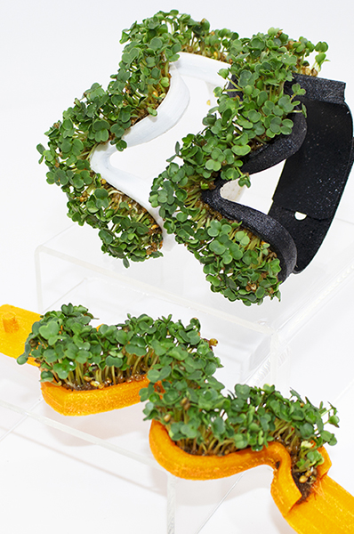
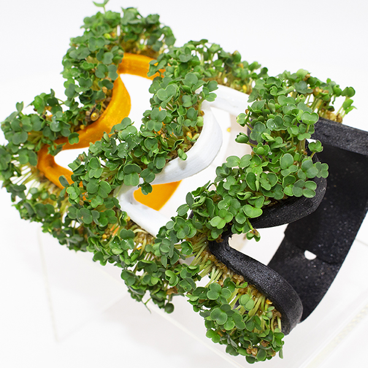
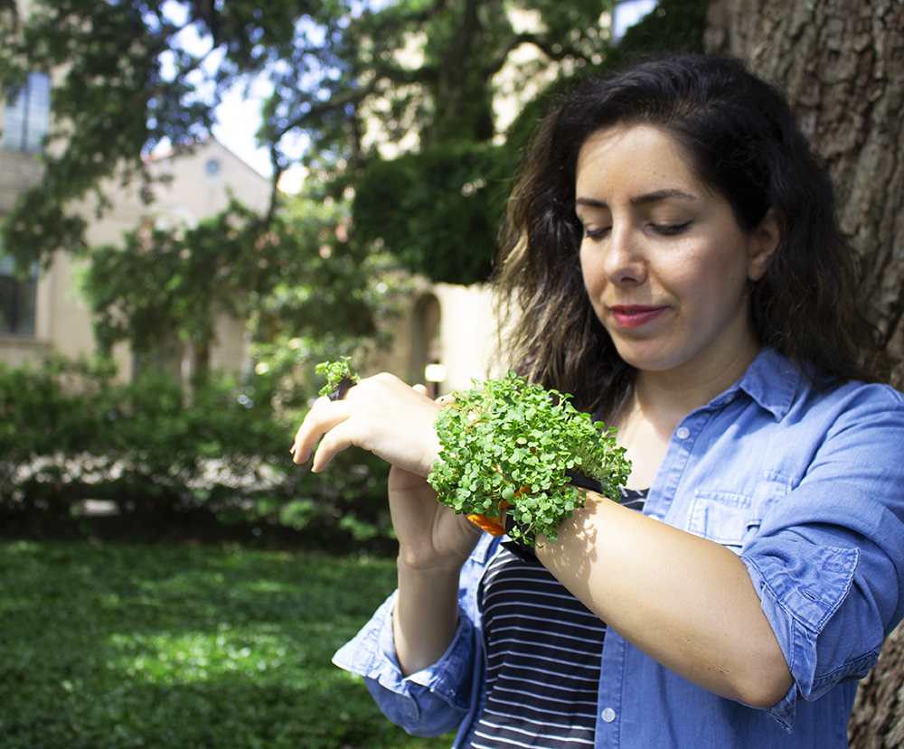
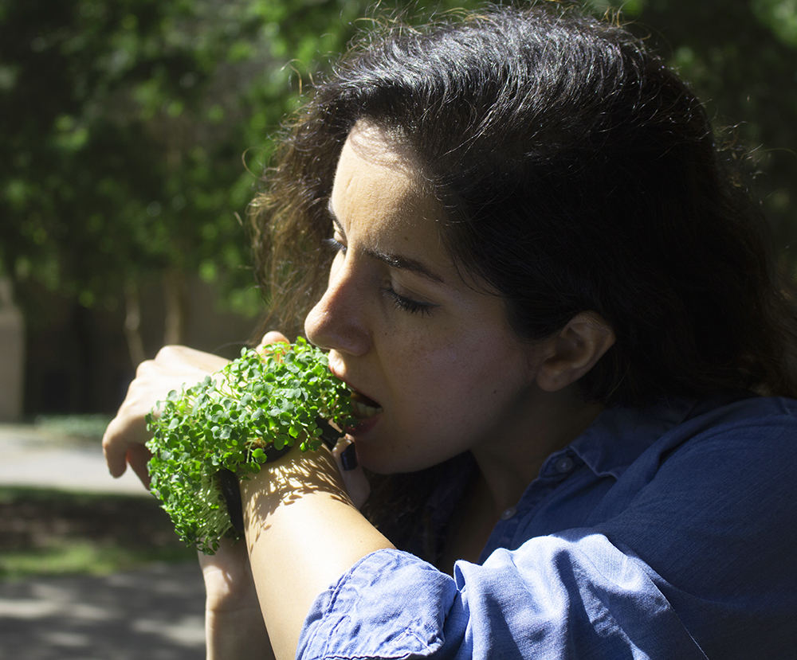

2022-2023, Wearable Living Interface
  
While nature can benefit people both mentally and
physically, contemporary society has become increasingly
disconnected from nature. To rebuild a stronger connection
with nature in our everyday life, we introduce FloraWear,
a do-it-yourself, wearable living interface, that enables
people to easily and closely connect with plants. By developing
emotional ties to their wearable plants, FloraWear wearers
begin to understand that both they and their plants are part
of an ecosystem.
Project Lead: Hye Yeon Nam
Collaborators: JaNiece Campbell, Andrew M. Web, Brendan Harmon
Paper
2023 February, FloraWear: Wearable Living Interface , TEI, Copernicus Science Centre, Warsaw, Poland